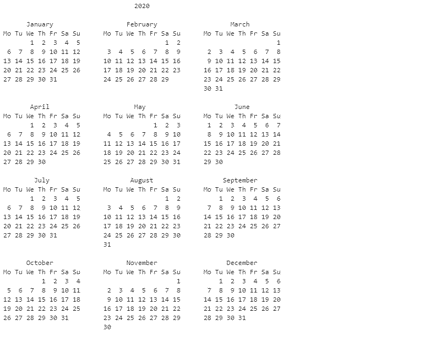
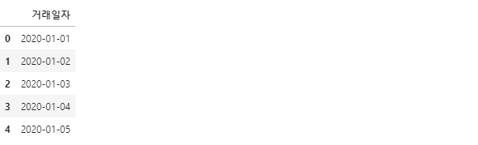
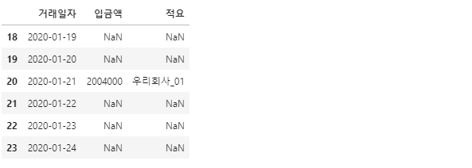
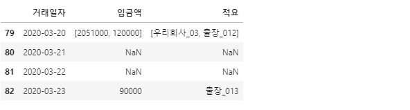
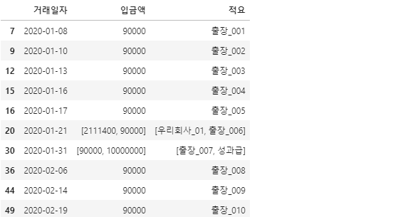
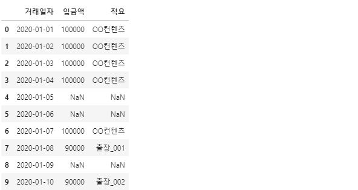
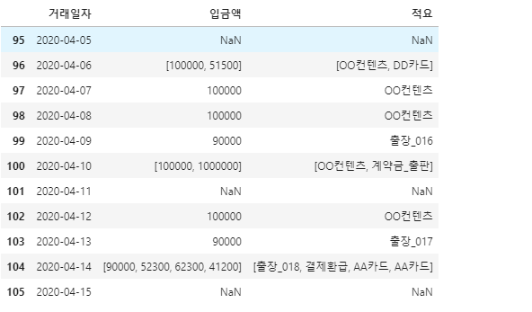
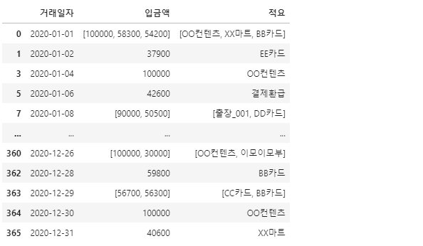
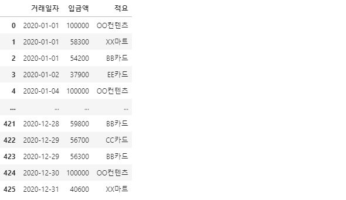
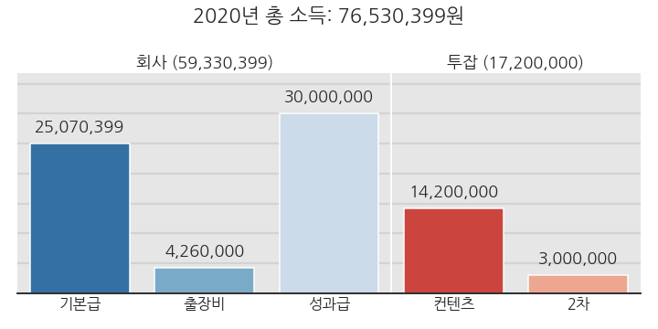

- 우리의 A씨는 투잡을 하는 영업사원입니다.
- A씨라는 가상의 인물 계좌를 어떻게 만들었는지 공개합니다.
numpy.random,datetime을pandas.DataFrame에 적용한 결과입니다.
- 전체 코드는 여기에서 다운로드 가능합니다.
- 일단 데이터를 만든다는 목표로 만든, 거의 라이브코딩 수준 코드입니다.
- 코드가 거칠더라도 양해바랍니다.
1. 투잡하는 영업사원 A씨

- A씨는 투잡하는 영업사원입니다.
- 다니는 회사와 계약한 컨텐츠 제작업체로부터 급여가 들어옵니다.
- 계약이 성사되면 성과급을 받고 가끔 컨텐츠 중에 2차 판매가 발생합니다.
- 충동구매와 구매취소를 자주 합니다.
- 그 바람에 통장엔 카드사 입금액이 많습니다.
- 입금은 되었지만 소득은 아닙니다.
- 어린 자녀가 있습니다.
- 친척들이 놀러오셔서 아이에게 용돈을 주고 가십니다.
- 아이가 많이 어립니다. A씨가 출근길에 입금하고, 인터넷뱅킹으로 아이 계좌로 이체합니다.
- 입금은 되었지만 A씨 돈이 아닙니다.
2. A씨의 2020년
- 코딩할 준비를 합니다.
1
2
3
4
5%matplotlib inline
import pandas as pd
import numpy as np
import matplotlib.pyplot as plt
2.1. 다시 보는 2020년 달력
2020년 달력을 한번 그려봅니다.
python에서 기본으로 제공하는 calendar 모듈을 사용합니다.
1
2
3import calendar
print(calendar.calendar(2020))
윤년이었습니다. 2월이 29일까지 있네요.
2020년은 366일이고, 수요일에 시작해서 목요일에 끝났습니다.
2.2. 통장 만들기
- 이제부터 계좌를 만듭니다.
- 계좌에는 거래일자가
2020-01-01형식으로 적혀있습니다. - datetime 모듈을 사용해서 쉽게 만들어 봅니다.
- 숫자만 넣으면 형식을 맞춰 날짜를 찍어주도록 합니다.
datetime()명령과datetime.strftime()명령을 사용합니다.1
2
3
4
5
6
7
8
9from datetime import datetime
# datetime 객체 만들기
time_init = datetime(2020, 1, 1)
print(f"1. time_init = {time_init}")
# datetime 객체를 string으로 변환
time_init_str = time_init.strftime("%Y-%m-%d")
print(f"2. time_init(str) = {time_init_str}")- 실행 결과:
1
21. time_init = 2020-01-01 00:00:00
2. time_init(str) = 2020-01-01
- 실행 결과:
- string으로 표현된 날짜도 datetime으로 바꿀 수 있습니다.
datetime.strptime()을 사용합니다.1
2time_init_datetime = datetime.strptime(time_init_str, "%Y-%m-%d")
print(f"3. time_init(datetime) = {time_init_datetime}")- 실행 결과:
1
3. time_init(datetime) = 2020-01-01 00:00:00
- 실행 결과:
- 요일을 확인합니다.
datetime.weekday()를 사용합니다.- 근무일 계산에 중요한 요소입니다.
1
2time_init_weekday = time_init.weekday()
print(f"4. time_init(weekday) = {time_init_weekday}")- 실행 결과: 0(월요일)~6(일요일)까지 숫자로 표현됩니다.
1
2time_init_weekday = time_init.weekday()
4. time_init(weekday) = 2
- 실행 결과: 0(월요일)~6(일요일)까지 숫자로 표현됩니다.
- 통장을 만드는데 날짜를 일일이 찍어주기 싫습니다.
forloop을 돌릴 수도 있겠지만 월별 날짜가 달라서 귀찮은 일이 생깁니다.- 특정 일자부터 며칠째를
datetime.timedelta로 계산하면 훨씬 편해집니다.1
2
3
4
5from datetime import timedelta
dt = timedelta(days=59)
time_59 = time_init + dt
print(f"5. time_59 = {datetime.strftime(time_59,'%Y-%m-%d')}")- 실행 결과: 59일째는 2월 29일입니다.
1
5. time_59 = 2020-02-29
- 실행 결과: 59일째는 2월 29일입니다.
- 이제 통장을 만듭니다. 거래일자부터.
1
2
3
4
5
6
7dates = []
for i in range(366):
date = time_init + timedelta(days=i)
dates.append(date.strftime('%Y-%m-%d'))
y2020 = pd.DataFrame({"거래일자": dates})
y2020.head()
3. A씨의 근로소득
3.1. 회사
3.1.1. 기본급
- 매달 200만원. 내규(?)로 인해 금액이 매달 10% 내에서 달라집니다.
- 월급날은 매달 21일입니다. 월급날 index를 확인합니다.
pandas.DataFrame의 string을 자를 때는Series.str.split()을 사용합니다.- 이 중에서 맨 오른쪽 데이터를 쓸 때는 다시
.str[-1]을 붙입니다.1
2
3
4
5y2020["입금액"] = np.nan
# 월급날 = 21일
idx_salary0 = y2020.loc[y2020["거래일자"].str.split("-").str[-1]=="21"].index
idx_salary0- 실행 결과:
1
Int64Index([20, 51, 80, 111, 141, 172, 202, 233, 264, 294, 325, 355], dtype='int64')
- 실행 결과:
- A씨 회사는 월급날이 주말이면 그 전 금요일에 월급을 줍니다.
- 월급날이 무슨 요일인지 확인합니다.
- 월급날을
pandas.Series.loc[]로 특정하고 요일을 찾는weekday()를 걸어줍니다. - 날짜를 datetime 형식으로 바꾸기 위해
strptime()을 사이에 끼워줍니다.1
2salary_w = y2020["거래일자"].loc[idx_salary0].apply(lambda x: datetime.strptime(x, '%Y-%m-%d').weekday())
print(f"salary_w.weekday = {salary_w.to_numpy()}")- 실행 결과: 주말이 세 번 껴있습니다 (3월, 6월, 11월)
1
salary_w.weekday = [1 4 5 1 3 6 1 4 0 2 5 0]
- 실행 결과: 주말이 세 번 껴있습니다 (3월, 6월, 11월)
주말이 낀 월급날을 그 앞 금요일로 옮겨줍니다.
현재의 index에서
weekday()-4만큼 빼주면 됩니다.조건문을 걸어 데이터를 바꿔줄 때는
numpy.where()가 좋습니다.1
2idx_salary = np.where(salary_w > 4, salary_w.index-(salary_w-4), salary_w.index)
idx_salary- 실행 결과: 3, 6, 11월의 월급날 index가 바뀌었습니다.
1
array([ 20, 51, 79, 111, 141, 170, 202, 233, 264, 294, 324, 355])
- 실행 결과: 3, 6, 11월의 월급날 index가 바뀌었습니다.
이제 기본급을 받아봅시다.
매달 200만원을 기준으로 10%까지 더 받을 수 있습니다.
numpy.random.uniform()으로 균등한 운명의 여신의 손에 기본급을 맡깁니다.기본급의 통장 내역은 “우리회사_월”로 찍힙니다.
1
2
3
4
5
6
7
8
9
10# 2백만원
salary = 2e6
# "입금액" 항목에 액수 기입
# 0~10%까지 추가금액을 랜덤으로 뽑고 반올림해서 백원이하 절사합니다.
y2020.loc[idx_salary, "입금액"] = [f"{int(x):d}" for x in salary*(1 + 0.1*np.random.uniform(size=len(idx_salary)).round(3))]
# "적요" 항목에 "우리회사_월" 형식으로 기본급 기입
y2020.loc[idx_salary, "적요"] = [f"우리회사_{i+1:02d}" for i in range(len(idx_salary))]
y2020.loc[18:23]
월급 한번 받기 힘듭니다.
1월 월급은 200만원 하고도 4천원입니다.
우리회사_01이라고 적혀있네요.
3.1.2. 출장비
- A씨는 바쁩니다. 1년에 출장을 50번 다닙니다.
- 1회 출장시 밥 사먹으라고 일비 3만원이 나옵니다.
- 1회 이동을 기준으로 교통비 3만원이 정액 지급됩니다.
- 예를 들어 하루에 3군데를 가면 일비 + 4회 이동 = 15만원이 나옵니다.
- 주말에는 출장을 가지 않습니다. 공휴일에는 갑니다.
- 중복을 허용한 랜덤 선택은
numpy.random.choice()를 사용합니다. - 1년 달력에서 주말과 주중을 분리합니다.
1
2
3
4
5
6
7
8
9
10
11
12# 날짜를 요일로 변환
weekday = y2020["거래일자"].apply(lambda x: datetime.strptime(x, '%Y-%m-%d').weekday())
# 근무일 (월~금)
workday = weekday[weekday < 5].index
# 주말 (토, 일)
weekend = weekday[weekday > 4].index
# 출장일 (근무일 중 50일. 중복 허용)
idx_biztrip0 = np.random.choice(workday, size=50)
idx_biztrip0- 실행 결과: 출장을 간 날입니다.
1
array([ 86, 232, 12, 30, 254, 310, 50, 145, 160, 222, 244, 349, 181, 79, 49, 99, 20, 79, 155, 338, 223, 225, 7, 9, 225, 226, 274, 103, 356, 226, 118, 205, 174, 155, 285, 83, 82, 159, 36, 44, 110, 286, 104, 323, 330, 15, 126, 119, 16, 260])
- 실행 결과: 출장을 간 날입니다.
출장 일정, 일별 출장 횟수와 일별 출장비를 계산합니다.
1
2
3
4
5
6idx_biztrip, num_biztrip = np.unique(idx_biztrip0, return_counts=True)
print(f"출장일 = {y2020.loc[idx_biztrip, '거래일자'].values}")
print(f"하루 출장횟수 = {num_biztrip}")
pay_biz = [f"{30000*(n+2):d}" for n in num_biztrip]
print(f"출장비 = {pay_biz}")- 실행 결과:
1
2
3출장일 = ['2020-01-08' '2020-01-10' '2020-01-13' '2020-01-16' '2020-01-17' '2020-01-21' '2020-01-31' '2020-02-06' '2020-02-14' '2020-02-19' '2020-02-20' '2020-03-20' '2020-03-23' '2020-03-24' '2020-03-27' '2020-04-09' '2020-04-13' '2020-04-14' '2020-04-20' '2020-04-28' '2020-04-29' '2020-05-06' '2020-05-25' '2020-06-04' '2020-06-08' '2020-06-09' '2020-06-23' '2020-06-30' '2020-07-24' '2020-08-10' '2020-08-11' '2020-08-13' '2020-08-14' '2020-08-20' '2020-09-01' '2020-09-11' '2020-09-17' '2020-10-01' '2020-10-12' '2020-10-13' '2020-11-06' '2020-11-19' '2020-11-26' '2020-12-04' '2020-12-15' '2020-12-22']
하루 출장횟수 = [1 1 1 1 1 1 1 1 1 1 1 2 1 1 1 1 1 1 1 1 1 1 1 2 1 1 1 1 1 1 1 2 2 1 1 1 1 1 1 1 1 1 1 1 1 1]
출장비 = ['90000', '90000', '90000', '90000', '90000', '90000', '90000', '90000', '90000', '90000', '90000', '120000', '90000', '90000', '90000', '90000', '90000', '90000', '90000', '90000', '90000', '90000', '90000', '120000', '90000', '90000', '90000', '90000', '90000', '90000', '90000', '120000', '120000', '90000', '90000', '90000', '90000', '90000', '90000', '90000', '90000', '90000', '90000', '90000', '90000', '90000']
- 실행 결과:
A씨의 몸과 마음은 힘들겠지만 출장비가 쏠쏠해 보입니다.
출장비를 아껴서 가족들과 치킨먹을 생각에 미소가 지어집니다. :)
- 월급날과 겹치는 날을 확인합니다.
- 교집합 계산은
set()이 편리합니다.1
print(set(idx_biztrip) & set(idx_salary))
- 실행 결과: 2일 겹칩니다.
1
{20, 79}
- 실행 결과: 2일 겹칩니다.
출장비를 통장에 꽂아줄 차례입니다. 문제는, 월급을 입력하듯 입력하면 안됩니다.
이미 통장에 기본급이 들어와 있기 때문에 그냥 입력하면 겹치는 날짜 월급이 지워집니다.
- 출장일에 이전 내역이 있는지 확인하고,
- 없으면 “입금액”과 “적요”란에 해당 내역을 입력.
- 이전 내역이 있으면 이전 내역을 list로 변환해 출장비를 원소로 붙여줍니다.
출장비 입금 내역은 “출장_출장횟수”입니다.
1
2
3
4
5
6
7
8
9
10
11
12
13
14
15
16
17
18
19
20
21
22
23# version 1
def put_income(df, idx_pay, pay, label):
for i, idx in enumerate(idx_pay):
if df["입금액"].isnull()[idx]:
df.loc[idx, "입금액"] = pay[i]
label_note = f"{label}_{(i+1):03d}"
df.at[idx, "적요"] = label_note
else:
income = df.loc[idx, "입금액"]
note = df.loc[idx, "적요"]
if not isinstance(income, list):
income = [income]
note = [note]
df.at[idx, "입금액"] = income + [pay[i]]
label_note = f"{label}_{(i+1):03d}"
df.at[idx, "적요"] = note + [label_note]
return df아까 구해둔 출장일과 출장비를 통장에 추가하고 결과를 확인합니다.
1
2y2020 = put_income(y2020, idx_biztrip, pay_biz, "출장")
y2020.loc[353:357]
의도대로 잘 반영되었습니다.
- 월급날과 겹친 날은 list 형태로 묶여 들어갔고,
- 그렇지 않은 날은 int와 string 형태로 저장되었습니다.
3.1.3. 성과급
- 계약 한건당 성과급을 1천만원 받습니다.
- A씨의 최고 기록은 한 해에 5건 계약입니다. 너무 힘들어서 이 이상은 안하기로 했습니다.
- 경험상 N번째 계약 확률이 $$0.7^N$$입니다. 여러 건을 성사시킬만큼 집중하려면 에너지가 그만큼 필요한데 총 량에 한계가 있기 때문입니다.
- A씨가 계약 건수를 늘리기보다 투잡을 시작하게 된 계기이기도 합니다.
- 2020년에 몇 건을 했을까요. 확률로 알아봅시다.
- 사건의 확률을 조작할 때도
numpy.random.choice()가 유용합니다.1
2
3
4
5
6
7
8
9
10num_success = 0
count = 0
result = 1
while count < 5 and result == 1:
p_success = np.power(0.7, (count+1))
result = np.random.choice([0, 1], p=[1-p_success, p_success])
count += result
print(f"계약 성공 횟수 = {count}")- 실행 결과: 올해는 성과가 좋습니다!
1
계약 성공 횟수 = 3
- 실행 결과: 올해는 성과가 좋습니다!
그럼 계약이 성사된 날은 언제일까요? 주중이겠죠?
1
2idx_success = np.random.choice(workday, count)
idx_success- 실행 결과: 이렇답니다. 날짜가 중요합니까. 통장에 넣을 index가 중요하지.
1
array([ 30, 212, 275])
- 실행 결과: 이렇답니다. 날짜가 중요합니까. 통장에 넣을 index가 중요하지.
이제 통장에 건당 1천만원을 넣어줍니다.
기본급과 출장비는 항목 옆에 숫자가 붙어있었지만, 성과급은 그냥 “성과급”만 찍힙니다.
코드를 예외처리 해야 합니다.
1
2
3
4
5
6
7
8
9
10
11
12
13
14
15
16
17
18
19
20
21
22
23
24
25
26
27
28
29
30
31# version 2
def put_income(df, idx_pay, pay, label, number=True):
for i, idx in enumerate(idx_pay):
if df["입금액"].isnull()[idx]:
df.loc[idx, "입금액"] = pay[i]
# 일련번호가 붙을 때를 따로 구분해줍니다.
label_note = f"{label}"
if number:
label_note += f"_{(i+1):03d}"
df.at[idx, "적요"] = label_note
else:
income = df.loc[idx, "입금액"]
note = df.loc[idx, "적요"]
if not isinstance(income, list):
income = [income]
note = [note]
df.at[idx, "입금액"] = income + [pay[i]]
# 일련번호가 붙을 때를 따로 구분해줍니다.
label_note = f"{label}"
if number:
label_note += f"_{(i+1):03d}"
df.at[idx, "적요"] = note + [label_note]
return df성과급 입금일이 출장이나 월급날과 겹친 날이 있는지 확인합니다.
1
2print(set(idx_biztrip) & set(idx_success))
print(set(idx_salary) & set(idx_success))- 실행 결과: 출장날과는 1월 31일 하루 겹쳤고, 월급날과는 겹치지 않았습니다.
1
2{30}
set()
- 실행 결과: 출장날과는 1월 31일 하루 겹쳤고, 월급날과는 겹치지 않았습니다.
겹친 날, 잘 들어가는지 확인합니다.
1
2y2020 = put_income(y2020, idx_success, ["10000000"]*len(idx_success), "성과급", number=False)
y2020.loc[30]- 실행 결과: 출장비에 데미지를 주지 않고 잘 들어갔습니다.
1
2
3
4거래일자 2020-01-31
입금액 [90000, 10000000]
적요 [출장_007, 성과급]
Name: 30, dtype: object
- 실행 결과: 출장비에 데미지를 주지 않고 잘 들어갔습니다.
3.1.4. 회사 입금액
- 회사로부터의 입금액들이 잘 들어가 있는지 한번 확인해봅니다.
- 데이터가 들어가 있지 않은 날은 빼고 한번 봅시다.
dropna()로 결측치가 있는 날들을 모두 제외하고.head(10)으로 처음 10줄만 봅니다.1
y2020.dropna().head(10)
- 우리의 A씨, 연초부터 열일했습니다.
- 1월에만 출장을 7번 다니면서 성과급도 받았네요.
3.2. 투잡
3.2.1. 컨텐츠 제작
- N잡러의 시대에 A씨도 예외가 아닙니다.
- 출장가는 날을 빼고 웬만하면 컨텐츠를 만들어 올리려고 합니다.
- 그러나 사람인지라 매일은 못합니다. 60% 정도 하는 것 같네요.
출장가지 않은 날을 헤아립니다. 주말 포함입니다.
1
2idx_twojob_max = np.array(list(set(y2020.index) - set(idx_biztrip)))
len(idx_twojob_max)- 실행 결과: 1년 중 대부분입니다.
1
320
- 실행 결과: 1년 중 대부분입니다.
60% “쯤” 투잡을 뜁니다.
표준편차가 한 달(30일)인 정규분포를 사용해 투잡한 날짜를 랜덤하게 뽑아봅니다.
numpy.random.normal()을 사용합니다.1
2num_twojob = int(np.random.normal(loc=0.5*len(idx_twojob_max*0.6), scale=30, size=1))
num_twojob- 실행 결과: 본업이 조금 힘들었나봅니다. 52.5%밖에 안했네요.
1
168
- 실행 결과: 본업이 조금 힘들었나봅니다. 52.5%밖에 안했네요.
168일이 일년 중 언제인지를
numpy.random.choice()를 사용해 추출합니다.같은 날이 두 번 뽑히면 안되니
replace=False로 놓습니다.그리고 그 날 통장엔 “OO컨텐츠” 명의로 10만원이 입금됩니다.
1
2
3
4
5
6# 투잡 뛴 날짜 index
idx_twojob = np.random.choice(idx_twojob_max, size=num_twojob, replace=False)
# 통장 입금
y2020 = put_income(y2020, idx_twojob, [100000]*num_twojob, "OO컨텐츠", number=False)
y2020.head(10)
- 설날도 일했군요. 힘내라고 응원해줍니다.
3.2.2. 2차 창작물
- 컨텐츠가 간혹(확률=1%) 부가가치를 창출합니다.
- 컨텐츠가 인기를 얻으면 기고 요청이나 강연이 들어오기도 합니다.
- 입금일은 컨텐츠 업로드 후 1주일 뒤고, 금액은 백만원입니다.
행운의 컨텐츠를 꼽아봅니다.
이번에도
numpy.random.choice()로 확률을 조정합니다.1
2
3
4
5
6
7
8
9# 2차 창작물 뽑기
idx_2nd_ = np.random.choice([0, 1], size=num_twojob, p=[0.99, 0.01])
# 2차 창작물 index
idx_2nd = np.where(idx_2nd_==1)[0]
print(idx_2nd)
# 2차 창작물 입금일 index
idx_2nd += 7- 실행 결과: 1%의 확률을 뚫고 총 168건 중 3건이나 뽑혔습니다!
1
[60 70 93]
- 실행 결과: 1%의 확률을 뚫고 총 168건 중 3건이나 뽑혔습니다!
통장에 입력해야 하는데, 이번엔 상황이 조금 다릅니다.
이제까지는 지정된 레이블에 일련번호가 붙거나 말거나였습니다.
이번엔 입금 건 별로 레이블이 바뀝니다.
str이 아니라array-like형식으로 들어올 때 하나씩 골라 넣는 코드가 필요합니다.1
2
3
4
5
6
7
8
9
10
11
12
13
14
15
16
17
18
19
20
21
22
23
24
25
26
27
28
29
30
31
32
33
34
35
36
37# version 3
def put_income(df, idx_pay, pay, label, number=True):
for i, idx in enumerate(idx_pay):
if df["입금액"].isnull()[idx]:
df.loc[idx, "입금액"] = pay[i]
if isinstance(label, str):
label_note = f"{label}"
if number:
label_note += f"_{(i+1):03d}"
df.at[idx, "적요"] = label_note
# label이 list로 들어오는 경우
else:
df.at[idx, "적요"] = label[i]
else:
income = df.loc[idx, "입금액"]
note = df.loc[idx, "적요"]
if not isinstance(income, list):
income = [income]
note = [note]
df.at[idx, "입금액"] = income + [pay[i]]
if isinstance(label, str):
label_note = f"{label}"
if number:
label_note += f"_{(i+1):03d}"
df.at[idx, "적요"] = note + [label_note]
# label이 list로 들어오는 경우
else:
df.at[idx, "적요"] = note + [label[i]]
return df코드를 수정했습니다. 이제 통장에 꽂아봅니다.
1
2num_idx_2nd = len(idx_2nd)
y2020 = put_income(y2020, idx_2nd, [1000000]*num_idx_2nd, np.random.choice(["계약금_출판", "출연료", "저작권료"], size=num_idx_2nd), number=False)잘 입금됐는지 확인합니다.
선정일 index [60, 70, 93]에서 일주일 뒤인 [67, 77, 100]을 확인합니다.
1
y2020.loc[[67, 77, 100]
- A씨, 잘 나가네요. 방송도 출연하고 출판계약도 했습니다.
3.3. 기타 입금액
- 소득이 정확히 얼마인지 알기 어렵게 하는 노이즈입니다.
- 온갖 카드 환급액, 가까운 친척들로부터의 아이 용돈.
- 금액을 떠나서 레이블이 다채로운 것이 문제입니다. 마구마구 넣어봅니다.
신용카드 거래취소 등입니다.
5개의 신용카드, 체크카드, 동네 마트 이름을 넣어줍니다.
환급액은 3만5천원부터 6만 5천원까지로 랜덤하게 200건을 만듭니다.
1
2
3
4
5# 신용카드 환불: 7가지
credit_num = 200
idx_credit = np.random.choice(workday, credit_num)
credit_cards = np.random.choice(["AA카드", "BB카드", "CC카드", "DD카드", "EE카드", "결제환급", "XX마트"], credit_num)
credit_refunds = [int(500 + 300* (np.random.random()-0.5))*100 for _ in range(credit_num)]A씨 자녀에게 어른들이 주신 용돈입니다.
할아버지할머니를 비롯한 5 종류의 어른들이 만원, 3만원, 5만원을 랜덤하게 주십니다.
1
2
3
4
5# 자녀 용돈: 5가지
breed_num = 20
idx_breed = np.random.choice(weekend, breed_num)
breed_persons = np.random.choice(["할아버지할머니", "삼촌숙모", "이모이모부", "고모고모부", "이웃어른"], breed_num)
breed_moneys = np.random.choice([10000, 30000, 50000], size=breed_num)
- 통장 입금 내역을 생성합니다.
1
2
3
4
5
6
7
8# 카드 환불액
y2020 = put_income(y2020, idx_credit, credit_refunds, credit_cards, number=False)
# 자녀 용돈
y2020 = put_income(y2020, idx_breed, breed_moneys, breed_persons, number=False)
# 4월 데이터를 샘플링해서 대충 현황을 확인합니다.
y2020.loc[95:105]
4. 통장 정리
- 은행 홈페이지나 앱에서 거래내역을 확인하면 모든 날짜가 있지 않습니다.
- 거래 내역이 없는 날은 날짜조차 없습니다.
pandas.DataFrame.dropna()로 입금액이 없는 날짜를 지워주고 확인합니다.1
2y2020 = y2020.dropna()
y2020
- 같은 날짜에 여러 건이 있는 날이 많습니다.
- 실제 통장에서는 한 줄에 한 건만 나와있습니다. 이렇게 만듭니다.
pandas.DataFrame.explode()를 사용해서 list마다 다른 행으로 만들고pandas.concat()으로 결합합니다.1
2y2020 = pd.concat([y2020[["거래일자", "입금액"]].explode("입금액"), y2020["적요"].explode()], axis=1).reset_index(drop=True)
y2020
- 총 입금액은 얼마일까요?
1
2y2020["입금액"] = y2020["입금액"].astype(int)
print("총 입금액 =", format(y2020['입금액'].sum(), ','))- 실행 결과: 8천 7백만원이 넘었습니다!
1
총 입금액 = 87,112,099
- 실행 결과: 8천 7백만원이 넘었습니다!
- 이 글을 쓰면서 코드를 여러 번 다시 실행했습니다.
- 수많은 랜덤 함수들로 이전 글과는 완전히 다른 결과가 나왔습니다.
- 이번 생의 소득은 얼마인지 봅시다. 시각화 코드는 이전 글에 있습니다.

5. 결론
- 랜덤 함수를 사용해서 한 사람의 투잡 소득 데이터를 만들어 보았습니다.
- 이 작업을 여러번 반복해서 수백 수천명의 A씨를 만들면 재밌는 일을 할 수 있겠다는 생각이 들었습니다.
- 주어진 환경에서 원잡에 집중할지 vs 투잡을 뛰는게 나을지 확률적으로 판단할 수 있겠더군요.
- 전 세계의 수많은 A씨를 응원합니다.